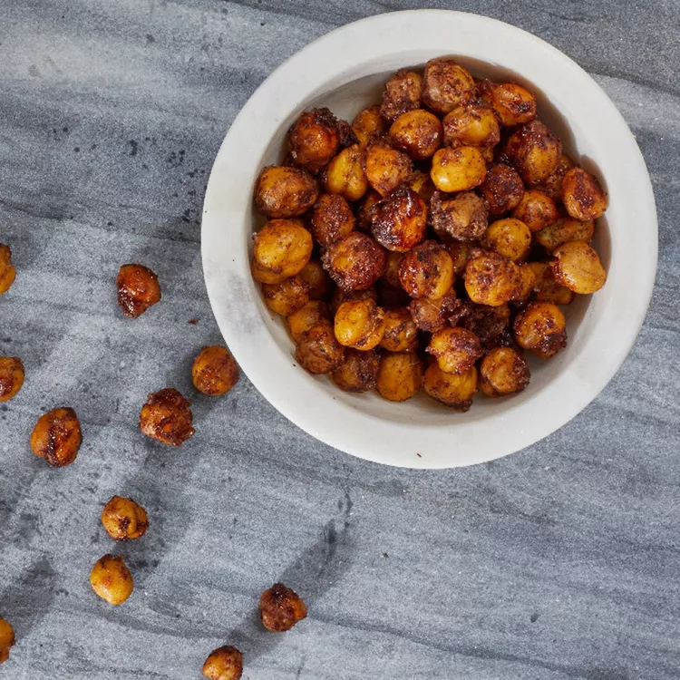

Cinnamon-Sugar Roasted Chickpeas
Roasting canned chickpeas until crispy makes a simple and healthy snack. In this riff on candied nuts, chickpeas are coated with cinnamon sugar to make them irresistible! This snack is best enjoyed the day it is made.
Preparation time
- Total: Approximately 60 minutes
- Preparation: 50 minutes
Ingredients
- 1 (15 ounce) can chickpeas, rinsed
- 1 tablespoon sugar
- 1 teaspoon ground cinnamon
- ⅛ teaspoon ground pepper
- 1 tablespoon avocado oil
Instructions
- step1: Position rack in the upper third of oven; preheat to 450 degrees F.
- step2: Blot chickpeas dry. Spread on a rimmed baking sheet. Bake for 10 minutes. Meanwhile mix sugar, cinnamon and pepper in a small bowl.
- step3: Transfer the chickpeas to a medium bowl and toss with oil and the cinnamon-sugar mixture. Return to the baking sheet and bake, stirring once, until browned and crunchy, 15 to 20 minutes more. Let cool on the baking sheet for 15 minutes.
- step4(enjoy): yeah now enjoy this.
Nutrition
The table below shows nutritional values per serving without the additional fillings.
| Calories | 125kcal |
|---|---|
| Carbs | 16g |
| Protein | 5g |
| Fat | 5g |